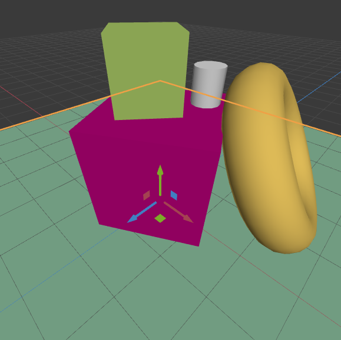
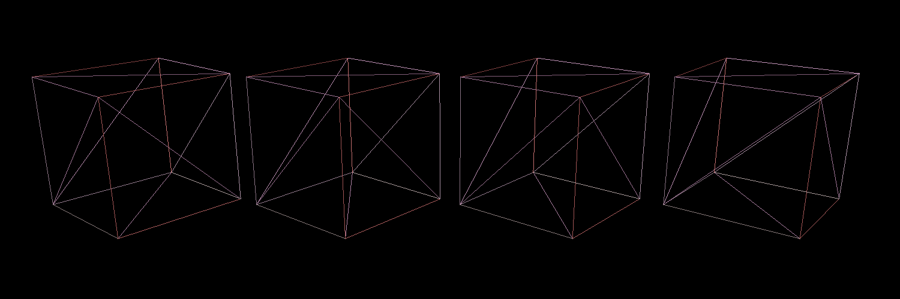
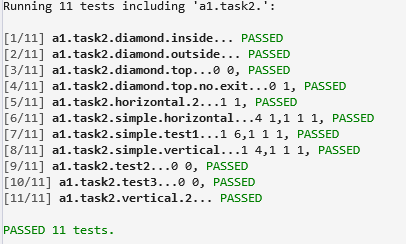
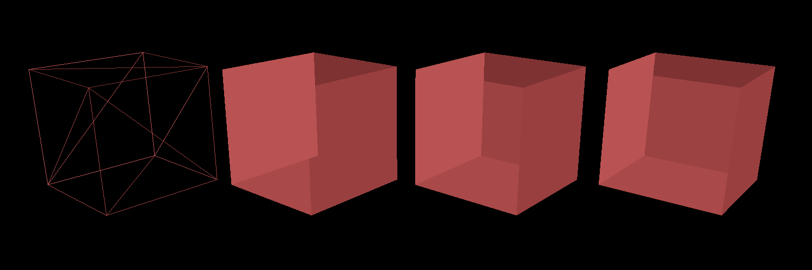
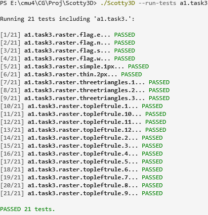
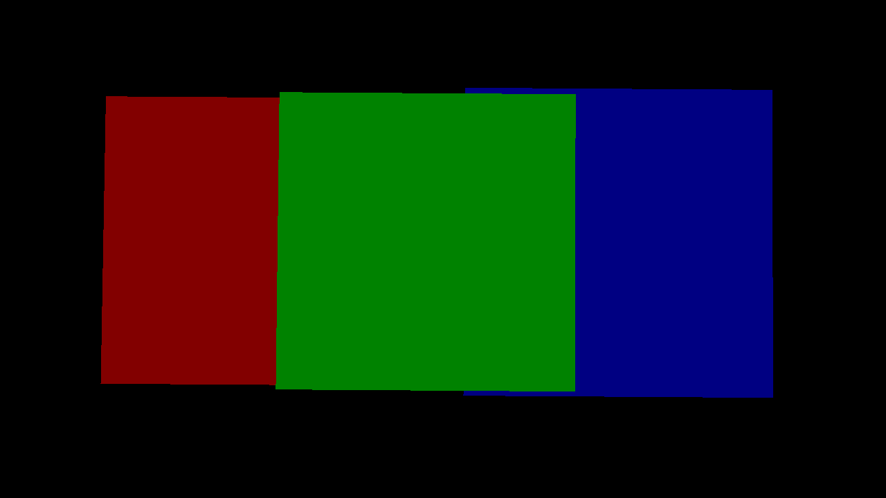
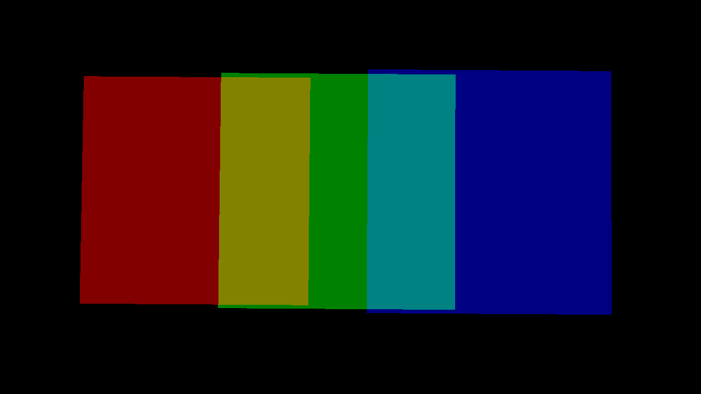
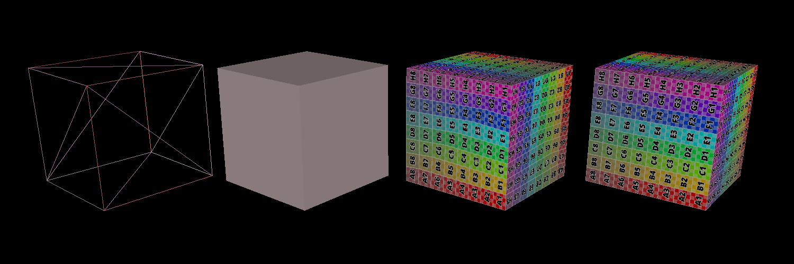
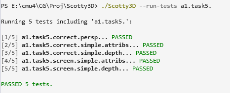
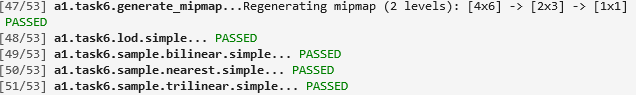

**Assignment 1 Report**
AndrewID: chuangm
(##) About this template
* You can view your writeup by opening it in a browser - right click this file and open with your browser of choice.
* Replace reference images with your own screenshots or renders when applicable.
* Include descriptions of any encountered problems and the time you spent on each task.
* **NOTE: The images you will submit here are different from the images in `A1.md`. Please make sure you are submitting the correct images.**
(##) A1T1 CHECKPOINT
You do not need any screenshots for this task.
Your completion will be graded based on the reference `test.a1.task1.cpp` file and
checking that transformations can be correctly applied in the GUI.

(##) A1T2 CHECKPOINT
All red:
With different color:

Pass all tests including Piazza's

Please replace the above image with your own screenshot of the rasterized wireframe cubes, but all in **RED**.
This can be done by doing the following:
* Open `media/js3d/A1-cubes.js3d` in the GUI,
* Set the DrawStyle of every cube to be 'Wireframe',
* Setting the material of one of the cubes to be a Constant type with a red color,
* Click on the Render tab, then open the Render Window, and use the default settings to rasterize the scene. You will need to switch from the `Path Tracer` option to `Software Rasterizer` option.
Your completion will be graded based on the on the above picture, the reference `test.a1.task2.cpp` file and
checking that rasterizing wireframe meshes will look decent.
(##) A1T3 CHECKPOINT


Please replace the above image with your own screenshot of the rasterized flat triangles cubes, but all in **RED**.
This can be done by doing the following:
* Open `media/js3d/A1-cubes.js3d` in the GUI,
* Set the DrawStyle of every cube to be 'Flat',
* Setting the material of one of the cubes to be a Constant type with a red color,
* Click on the Render tab, then open the Render Window, and use the default settings to rasterize the scene. You will need to switch from the `Path Tracer` option to `Software Rasterizer` option.
Your completion will be graded based on the above picture, the reference `test.a1.task3.cpp` file and
checking that rasterizing flat triangle meshes will look decent.
(##) A1T4 CHECKPOINT
You do not need any screenshots for this task. However, please answer the following questions about `media/js3d/A1T4-blend-depth.js3d1`:
* What combination of blend and depth styles would enable us to see three colors?
* Red: Blend: Blend Replace, Depth: Depth Always
* Green: Blend: Blend Replace, Depth: Depth Always
* Blue: Blend: Blend Replace, Depth: Depth Always

* What combination of blend and depth styles would enable us to see five colors?
* Red: Blend: Blend Add , Depth: Depth Always
* Green: Blend: Blend Add , Depth: Depth Always
* Blue: Blend: Blend Add , Depth: Depth Always

Do note that there are multiple correct answers to the above two questions - as long as you provide a valid one, you will receive credit.
Your completion will be graded based on the on the above answers, the reference `test.a1.task4.cpp` file and
checking that rasterizing with different blend and depth modes will look decent.
(##) A1T5 FINAL


Please replace the above image with your own screenshot of the rasterized smooth and correct triangles cubes.
This can be done by doing the following:
* Open `media/js3d/A1-cubes.js3d` in the GUI,
* Set the DrawStyle of the wireframe cube to be 'smooth' and the DrawStyle of the flat cube to be 'correct',
* Click on the Render tab, then open the Render Window, and use the default settings to rasterize the scene. You will need to switch from the `Path Tracer` option to `Software Rasterizer` option.
Your completion will be graded based on the above picture, the reference `test.a1.task5.cpp` file and
checking that rasterizing flat triangle meshes will look decent.
(##) A1T6 FINAL
You do not need any screenshots for this task.
Your completion will be graded based on the reference `test.a1.task6.cpp` file and
checking that rasterizing the samplers scene will look decent.

(##) A1T7 FINAL
Insert a picture of your sample pattern here (up to you on how you created it):
Explanation of what your SamplePattern does and scenarios it would do well and poorly in:
I alternate the sampling points with each other, with five sampling points in the odd-numbered sequence, but only four
sampling points in the even-numbered sequence.
The distance between points remains constant, but the
distance between edge points and the boundary is different.
I believe that this sampling approach may yield better results for some irregular shapes,
but it may not work as effectively for highly regular images
because my sampling points are not evenly distributed and have a degree of randomness.
Your completion will be graded based on the above answer, the reference `test.a1.task7.cpp` file and
checking that rasterizing the samplers scene will look decent.
All
(##) RASTERIZED IMAGE FINAL
Your image:
Explanation of what it is and how you made it:
I originally wanted to create a teleportation point with a surrounding halo,
which is often seen in science fiction games. However, it seems more like a cylindrical space station with a ring.
I first constructed the central part using two cylinders and then built a ring around it.
Any free model sources you need to credit?
No.
(##) EXTRA CREDIT FINAL
Use this section to explain any extra credit implementations you have made.
(##) Feedback
Use this section to provide feedback about the assignment.
Task1:
This is kind of easy. I have firstly used a loop to check parent. Then
I found out that using function from parent to do recursion like method is better.
time spent: 1 hours
Task2:
This is kind of hard before taking the course to think about my
own methods. But after taking course, I use the method in
course and it makes work easier.
Howerver, the Bresenham Algorithm does not fully confide to the diamond-exit rule. So
I need to spend more time on this for the end point.
To pass all tests in Piazza, I tried lots of method. Many corner cases are not easy to solve.
time spent: 8 hours
Task3:
This is also kind of hard before taking the course to think about my
own methods. I created a lot of helper function to help me figure this out.
I spent a lot of time to design code for corner cases especally for points on edge.
After reading slides and taking course. It's not difficult
to implement the inside check.
Howevre, to pass all tests in Piazza, need to do top-left rules checking which takes most of
the time.
time spent: 9 hours
Task4:
This is kind of easy after lecture.
time spent: 1 hours
Task5:
This is evern harder than before. I need to consider a lot of corner cases and
fully understand the context in courses. Besides, I need to figure out the meaning and
implement of derivatives which take me a lot of time.
time spent: 12 hours
Task6:
At first, I didn't find out that x and y need to do -0.5, which takes me a lot to time to find
out this problem. But using methods in silde. It's not that difficult. Also, need to notice si that
the original image is the actual 'level 0'. Also, there are many corner cases need to be considered.
time spent: 8 hours
Task7:
Index and color part is not that difficult. Also, design my own pattern didn't cost much time.
Howerver, I spent lots of time figuring the meaning and what I need to do in loop including which part
I need to include in loop and what I need to change.
time spent: 11 hours